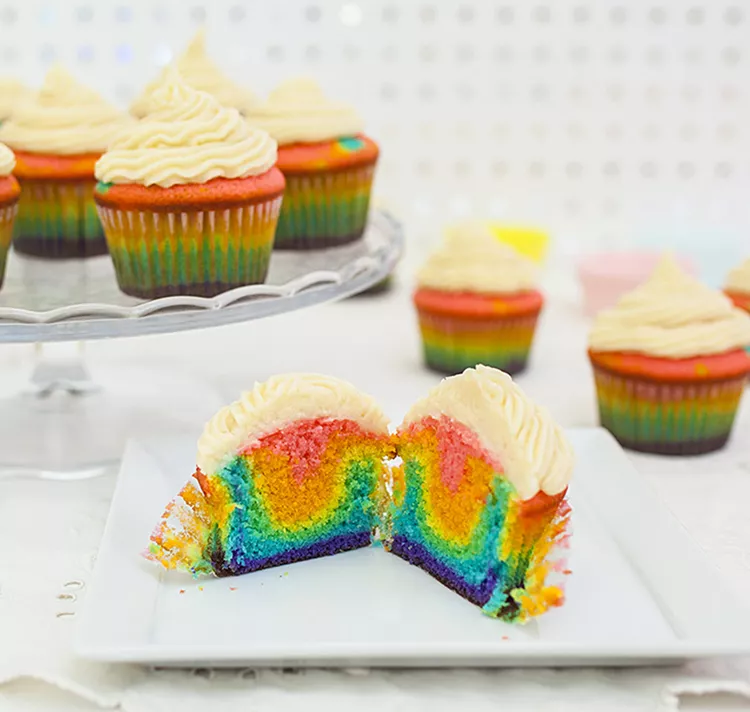

Over the Rainbow Cupcakes

Description
A psychedelic treat made entirely from scratch! Use your favorite vanilla buttercream frosting to complement the vanilla in the cupcakes.
Ingredients
- 2 ¾ cups all-purpose flour
- 4 teaspoons baking powder
- ¾ teaspoon salt
- 4 large egg whites
- 1 ½ cups sugar, divided
- ¾ cup unsalted butter, softened
- 1 teaspoon vanilla extract
- 1 ½ cups milk
- 1 teaspoon vanilla extract
- rainbow food colorings (red, orange, yellow, blue, green, purple)
Steps
- Preheat the oven to 350 degrees F (180 degrees C). Line 18 muffin cups with paper liners.
- Sift flour, baking powder, and salt together three times. Set aside.
- Beat egg whites in a bowl until foamy. Gradually add 1/2 cup sugar and continue beating just until soft peaks form.
- Beat butter in a separate bowl until fluffy, 2 to 3 minutes. Gradually add remaining 1 cup sugar and cream and mix until light and fluffy, about 5 minutes. Add sifted dry ingredients alternately with milk a small amount at a time, beating after each addition. Mix in vanilla. Add egg whites and mix well.
- Set out 6 bowls. Add 1 drop of food coloring to the bowls, using a different color in each bowl. Divide the cupcake batter evenly between the bowls. Stir until the coloring is evenly distributed throughout the batter. Add more food coloring, a drop at a time, until desired color is reached.
- Using a tablespoon, spoon the first colored batter into the bottom of each cupcake liner in the prepared pan. Gently spread out to the edge of the liner to create an even layer. Repeat with remaining colors.
- Bake in the preheated oven a toothpick inserted into the center of a cupcake comes out clean, about 20 minutes. Cool slightly in pan, then remove to cool completely on wire racks.